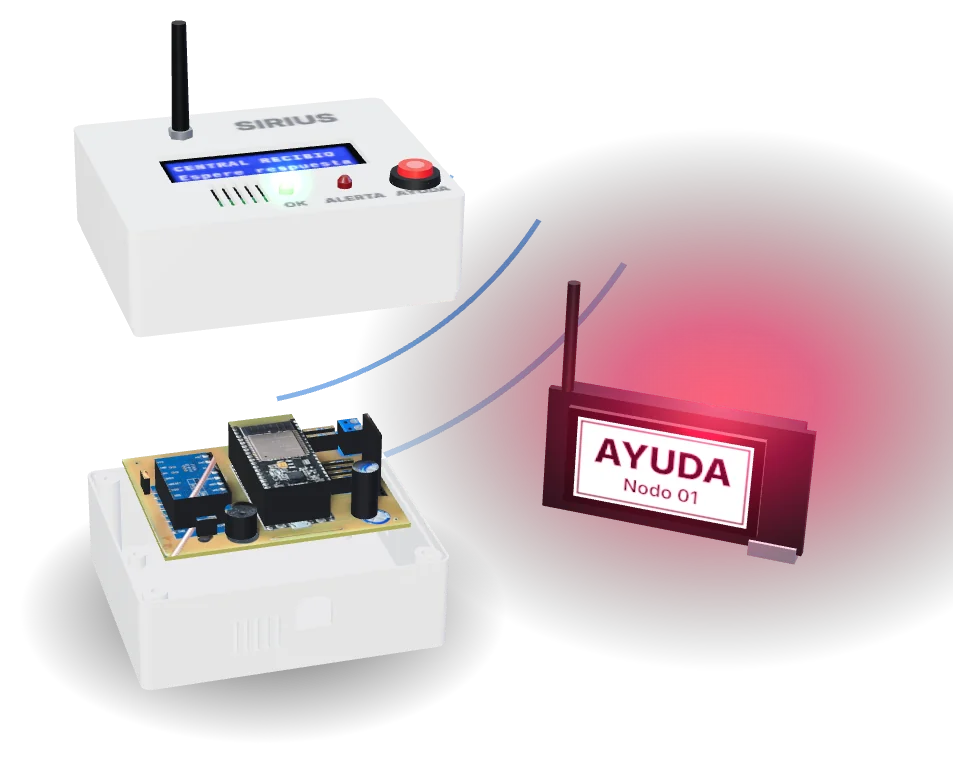
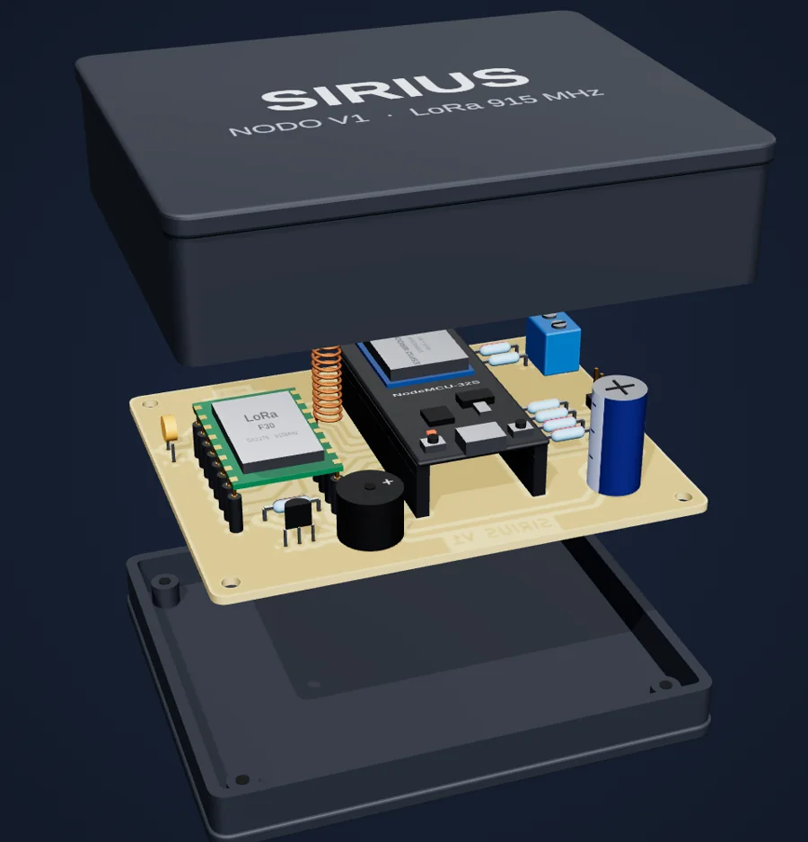
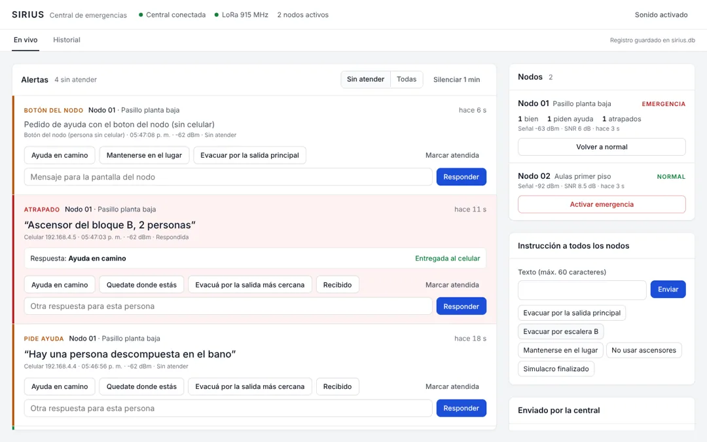

Hoy el protocolo es fijo: suena la alarma y todos por la misma salida de siempre. Aunque el fuego esté justo en ese camino.
Avisa que hay peligro, pero no qué camino conviene tomar.
Nadie confirma quién salió y quién quedó adentro.
Una persona sorda no escucha la alarma.
Ingresantes, visitas, gente de otra carrera: quien está adentro no siempre figura en una lista.
Se apaga el Wi‑Fi del edificio y la red celular se satura justo cuando más hace falta avisar.
La alarma le dice a todo el edificio que salga.SIRIUS le dice a cada sector qué hacer, y cada sector le contesta.
El corte de luz, solo. Y el botón de ayuda, para quien no tiene celular.
En las dos direcciones, por radio propia. Cada mensaje confirma que llegó.
Quién respondió, desde dónde y cuándo. Cada simulacro deja datos.
Te conectás al Wi‑Fi del nodo y se abre esta página sola, sin app y sin internet. Elegí una opción.
Avisá tu situación. Tu aviso llega a la central aunque no haya internet ni señal.
Simulación de la demo. En el nodo real pasa exactamente esto, con el celular en modo avión.
Hay fuego en el hall principal. La brigada lo ve en la central y decide en el momento, sector por sector.


No reemplaza a la alarma ni al celular. Es lo que sigue funcionando cuando esos dos fallan.